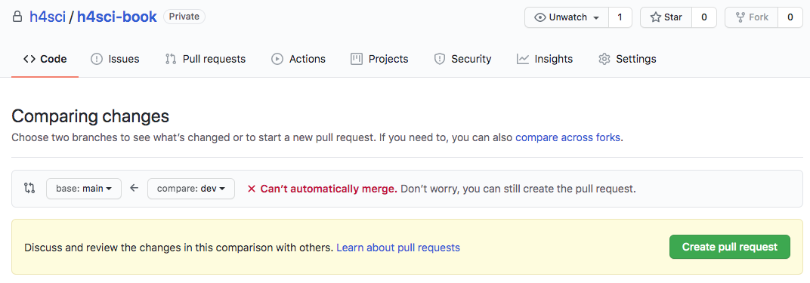

4 Developer Practices & Workflows
Just like most experienced engineers, seasoned software developers follow some kind of school or paradigm. Good programmers can even switch among approaches according to their current project’s needs or depending on the team they are on.
This section does not want to give a comprehensive overview over programming concepts nor compare approaches. And damn sure it does not mean to go to war over approach superiority. Hacking for Social Scientists rather cherry-picks suitable application-minded, low-barrier concepts that help social scientists professionalize their own programming.
4.1 Peer Programming
Peer programming, also called pair programming just means two developers sit in front of the same screen to collaborate on a piece of code. So why is there such a buzz about it? Why is there even a term for it? And why is there a section in an applied book on it?
That is because novice programmers (and their scientific supervisors) often doubt the efficiency of two paid persons working at the same work station. But programming is not about digging a hole with two shovels. Particularly not when it comes to building the software basis or frame of a project.
Working together using one single keyboard and screen or the virtual equivalent thereof can be highly efficient. The virtual equivalent, i.e., in fact using two computers but sharing the screen while in call, helps tremendously with a) your concept, b) your documentation. Plus, it is a code review at the same time. But most importantly both developers learn from each other. Having to explain and being challenged, deepens the understanding of experienced developers and ruthlessly identifies holes in one’s knowledge. One important advice when peer programming is to switch the driver’s seat from time to time. Make sure the lesser programmer holds the keys from time to time and maneuvers through articles, repositories, code and data. Doing so prevents the co-pilot from taking a back seat and letting the veteran do the entertainment. Visual Studio Code Live Share is a great feature for next level virtual peer programming as it allows for two drivers using two cursors.
Of course there are downsides of the pair programming approach, too. Also, timing within the lifecycle of a project is an important factor and not every project is the same fit for this agile method. But given there are so many approaches, I will leave the back and forth to others. The goal of this section is to point the reader to a practical approach that tends to work well in programming with data setups in social sciences. Googlers Jeff Dean and Sanjay Ghemawat had its fair of success, too, according to the New Yorker’s https://www.newyorker.com/magazine/2018/12/10/the-friendship-that-made-google-huge.
4.2 RSA Key Pair Authentication
This section could be headed ‘log in like a developer.’ RSA Key Pairs are a convenient, relatively secure way to log into an account. SSH based connections, including secure copy (SCP), often make use of RSA Key Pairs instead of using a combination of username and password. Also, most git platforms use this form of authentication. The basic idea of key pairs is to have a public key and a private key. While the private key is never shared with anyone, the public key is shared with any server you want to log in to. It’s like getting a custom door for any house that you are allowed to enter: share your public key with the server admin / or web portal and you’ll be allowed in when you show your private key. In case you loose your private key or suspect it has been stolen, simply inform the admin, so she can remove the door (the public key). This is were a little detail comes into play: you can password protect the authentication process. Doing so buys you time to remove the key from the server before your password gets bruteforced. The downside of this additional password is its need for interaction. So when you are setting up a batch that talks to a remote server that is when you do not want a key /w password.
Step one en route to log in like a grown up, is the create an RSA key pair. Github has a 1-2-3 type of manual to get it done. Nevertheless, I would like the R Studio (Server) specific way here.
- Login to https://teaching.kof.ethz.ch/ (or use your local R Studio Desktop)
- Go to Tools -> Global Options -> Git/SVN
- Hit Create RSA KEY (When you some crazy ASCII art reminiscant of a rabbit, it’s just ok.)
- Click ‘View Public Key’
- Copy this key to the your clipboard.

- You can paste the key you obtained to your Github settings or put it into your server’s authorized keys file.
Congrats you may log in now!
4.3 Git Version Control 101
As stated before, version control may be the single most important thing to take away from Hacking for Social Sciences. In this chapter about the way developers work, I will stick to version control with git. The stack discussion of the previous chapter features a few more version control systems, but given git’s dominant position, we will stick solely to git in this introduction to version control.
4.3.1 What is Git Version Control?
Git is a decentralized version control system. It manages different versions of your source code (and other text files) in a simple but efficient manner that has become the industry standard: The git programm itself is a small console programm that creates and manages a hidden folder inside the folder you put under version control (you know those folders with a leading dot in their foldername, like .myfolder). This folder keeps track of all differences between the current version and other versions before the current one.

The key to appreciate the value of git is to appreciate the value of semantic versions. Git is not Dropbox nor Google Drive. It does not sync automagically (even if some Git GUI Tools suggest so). Because these GUIs tools2 may be convenient but do not really help to improve your understanding of the workflow, we will use the git console throughout this book. As opposed to the sync approaches mentioned above, a version control system allows to summarize a contribution across files and folders based on what this contribution is about. Assume you got a cool pointer from an econometrics professor at a conference and you incorporated her advice in your work. That advice is likely to affect different parts of your work: your text and your code. As opposed to syncing each of these files based on the time you saved them, version control creates a version when you decide to bundle things together and to commit the change. That version could be identified easily by its commit message ‘incorporated advice from Anna (discussion at XYZ Conf 2020).’
4.3.2 Why Use Version Control in Research?
A version control based workflow is a path to your goals that rather consists of semantically relevant steps instead of semantically meaningless chunks based on the time you saved them.
In other more blatant, applied words: naming files like
final_version_your_name.R or final_final_correction_collaboratorX_20200114.R
is like naming your WiFi dont_park_the_car_in_the_frontyard or be_quiet_at_night to communicate with your neighbors. Information is supposed to be sent in a message, not a file name. With version control it is immediately clear what the most current version is - no matter the file name. No room for interpretation. No need to start guessing about the delta between the current version and another version.
Also, you can easily try out different scenarios on different branches and merge them back together if you need to. Version control is a well established industry standard in software development. And it is relatively easy to adopt. With datasets growing in size and complexity, it is only natural to improve management of the code that processes these data.
Academia has probably been the only place that would allow you to dive into hacking at somewhat complex problems for several years w/o ever taking notice of version control. As a social scientist who rather collaborates in small groups and writes moderate amount of code, have you ever thought about how to collaborate with 100+ persons in a big software project? Or to manage ten thousands of lines of code and beyond? Version control is an important reason why these things work. And it’s been around for decades. But enough about the rant…
4.3.3 How Does Git Work ?
This introduction tries narrow things down to the commands that you’ll need if want to use git in similar fashion to what you learn from this book. If you are looking for more comprehensive, general guides, three major git platforms, namely Atlassian’s Bitbucket, GitHub and Gitlab offer comprehensive introductions as well as advanced articles or videos to learn git online.
The first important implication of decentralized version control is that all versions are stored on the local machines of every collaborator, not just on a remote server (this is also a nice, natural backup of your work). So let’s consider a single local machine first.

Locally, a git repository consists of a checkout which is also called current working copy soon. This is the status of the file that your file explorer or your editor will see when you use them to open a file. To checkout a different version, one needs to call a commit by its unique commit hash and checkout that particular version.
If you want to add new files to version control or bundle changes to some existing files into a new commit, add these files to the staging area, so they get committed next time a commit process is triggered. Finally committing all these staged changes under another commit id a new version is created.
4.3.4 Moving Around
So let’s actually do it. Here’s a three stage walk through of git commands that should have you covered in most use cases a researcher will face. Note that git has some pretty good error message that guess what could have gone wrong. Make sure to read them carefully. Even if you can’t make sense of them, your online search will be a lot more efficient when you include these messages.
Stage 1: Working Locally
| Command | Effect |
|---|---|
| git init | put current directory and all its subdirs under version control. |
| git status | shows status |
| git add file_name.py | adds file to tracked files |
| git commit -m ‘meaningful msg’ | creates a new version/commit out of all staged files |
| git log | show log of all commit messages on a branch |
| git checkout some-commit-id | go to commit, but in detached HEAD state |
| git checkout main-branch-name | leave temporary state, go back to last commit |
Stage 2: Working with a Remote Repository
Though git can be tremendously useful even without collaborators, the real fun starts when working together. The first step en route to get others involved is to add a remote repository.
| Command | Effect |
|---|---|
| git clone | creates a new repo based on a remote one |
| git pull | get all changes from a linked remote repo |
| git push | deploy all commit changes to the remote repo |
| git fetch | fetch branches that were created on remote |
| git remote -v | show remote repo URL |
| git remote set-url origin https://some-url.com | set URL to remote repo |
Stage 3: Branches
Branches are derivatives from the main branch that allow to work on different feature at the same time without stepping on someone elses feet. Through branch repositories can actively maintain different states.
| Command | Effect |
|---|---|
| git checkout -b branchname | create new branch named branchname |
| git branch | show locally available branches |
| git checkout branchname | switch to branch named branchname |
| git merge branchname | merge branch named branchname into current branch |
Fixing Merge Conflicts
In most cases git is quite clever and can figure out which is the desired state of a file when putting two versions of it together. When git’s recursive strategy is possible, git it wil merge versions automatically. When the same lines were affected in different versions, git cannot tell which line should be kept. Sometimes you would even want to keep both changes.
But even in such scenario fixing the conflict is easy. Git will tell you that your last command caused a merge conflict and which files are conflicted. Open these files and see all parts of the file that are in question.

Luckily git marks the exact spot where the conflict happens. Good text editors / IDEs ship with cool colors to highlight all our options.

Some of the fancier editors even have git conflict resolve plugins that let you walk through all conflict points.

At the and of the day, all do the same, i.e., remove the unwanted part including all the marker gibberish. After you have done so, save, commit and push (if you are working with a remote repo) . Don’t forget to make sure you kinked out ALL conflicts.
4.4 Feature Branches, PRs and Forks
This section discusses real world collaboration workflows of modern open source software developers. Hence the prerequisites are a bit different in order to benefit the most from this section. Make sure you are past being able to describe and explain git basics, be able to create and handle your own repositories.
If you had only a handful of close collaborators so far, you may be fine with staying on the main branch and trying not to step on each others feet. This is reasonable because it is not useful to work asynchronously on exact the same lines of code anyway. Nevertheless, there is a reason why feature-branch-based workflows became very popular among developers: Imagine you collaborate less synchronously, maybe with someone in another timezone. Or with a colleague who works on your project, but in a totally different month during the year. Or, most obviously, we someone you have never met. Forks and feature-branch-based workflows is the way a lot of modern open source projects are organized.
Forks are just a way to contribute via feature branches even in case you do not have write access to a repository. But let’s just have look at the basic case in which you are part of the team first. Assume there is already some work done, some version of the project is already up on GitHub. You join as a collaborator and are allowed to push changes now. It’s certainly not a good idea to simply add things without review to a project’s production. Like if you got access to modify the institute’s website and you made your first changes and all of a sudden the website looks like this:
It used to be subtle and light gray. I swear!
Bet everybody on the team took notice of the new team member by then. In a feature branch workflow you would start from the latest production version. Remember, git is decentralized and you have all versions of your team’s project. Right at your fingertips on your local machine. Create a new branch named indicative of the feature you are looking to work on.
git checkout -b colorwaysYou are automatically being switched to the freshly created branch. Do your thing now. It could be just a single commit, or several commits by different persons. Once you are done, i.e., commited all changes, add your branch to the remote repository by pushing.
git push -u origin colorwaysThis will add a your branch called colorways to the remote repository. If you are on any major git platform with your project, it will come with a decent web GUI. Such a GUI is the most straight forward way to do the next step: get your Pull Request (PR) going.
As you can see, git will check whether it is possible to merge automatically w/o interaction. Even if that is not possible, you can still issue the pull request. When you create the request you can also assign reviewers, but you could also do so at a later stage.
Note, even after a PR was issued you can continue to add commits to the branch about to be merged. As long as you do not merge the branch through the Pull Request, commits are added to the branch. In other words your existing PR gets updated. This is a very natural way to account for reviewer comments.
Pro-Tipp: Use commit messages like ‘added join to SQL query, closes #3.’ The key word ‘closes’ or ‘fixes,’ will automatically close issues referred to when merged into the main branch.
Once the merge is done, all your changes are in the main branch and you and everyone else can pull the main branch that now contains your new feature. Yay!
4.5 Project Management Basics
The art of stress free productivity as I once called it in ’10 blog post, has put a number of gurus on the map and whole strand of literature to our bookshelves. So rather than adding to that, I would like to extract a healthy, best-of-breed type of dose here. The following few paragraphs do not intend to be comprehensive – not even for the scope of software projects, but inspirational.
In tje software development startup community, the waterfall approach became synonym to conservative, traditional and ancient: Overspecification in advance of the project, premature optimization and a lawsuit over expectations that weren’t met. Though waterfall project may be better than their reputation and specifications should not be too detailed and rigid.
Many software projects are rather organized in agile fashion with SCRUM and KANBAN being the most popular derivatives. Because empirical academic projects have a lot in common with software projects inasmuch that there is a certain expectation and quality control, but the outcome is not known in advance. Essentially in agile project management you roughly define an outcome along the lines of a minimum viable product (MVP). That way you do not end up with nothing after a year of back and forth. During the implementation you’d meet regularly, let’s say every 10 days, to discuss development since the last meet and what short term plans for the next steps ahead. The team picks splits work into task items on the issue tracker and assigns them. Solution to problems will only be sketched out and discussed bilaterally or in small groups. By defining the work package for only a short timespan, the team stays flexible. In professional setups agile development is often strictly implemented and makes use of sophisticated systems of roles that developers and project managers can get certified for.
Major git platforms ship with a decent, carpentry level project management project management GUI. The issue tracker is at the core of this. If you use it the minimal way, it’s simply a colorful to-do list. Yet, with a bit of inspiration and use of tags, comments and projects, an issue tracker can be a lot more

Swimlanes (reminiscant of a bird’s eye view of an Olympic pool) can be thought of columns that you have to walk through from left to right: To Do, Doing, Under Review, Done. (you can also customize the number and label of lanes and event associate actions with them, but let’s stick to those basic lanes in this section.) The idea is to use to keep track of the process and making the process transparent.

```{, type=‘note’} Tipp: No lane except ‘Done’ should contain more than 5-6 issues. Doing so prevents clogging the lanes at particular stage which could potentially lead to negligent behavior, e.g., careless reviews.
## Testing
When talking about development practices, testing can't be missing. So, just you know that I thought of this, tbc ...
<!--chapter:end:index.Rmd-->
# Programming 101
<!-- DO NOT FORGET TO SAY SOMETHIN ABOUT LICENSES !! -->
If you associate programming more often than not with hours of fiddling, tweaking and fighting to galvanize approaches found online, this chapter is for you. Don't expect lots of syntax. If you came for examples of useful little programs from data visualization to parallel computing, check out the [case studies]().
The following sections share a blueprint to go from explorative script to production ready package. Organise your code and accompany the evolution of your project: start out with experiments, define your interface, narrow down to a proof of concept and scale up. Hopefully the tips, tricks and the guidance in this chapter will help you to experience the rewarding feeling of a software project coming together like a plan originated by Hannibal Smith.
<!-- - maybe overview sketch here... decision tree. -->
## Think library!
<div align="center">
<img src="images/packages.jpg" height="300px">
<div class="caption-half">"Over the days are when creating packages for gurus was only."</div>
</div>
The approach that I find practical for applied, empirical research projects involving code is: think library. Think package. Think _reusable_ code. Don't think you can't do it. Let me de-mystify packages for you: **Packages are nothing else than source code organized in folders following some convention**. Thanks to modern IDEs, it has never been easier to stay inline with conventions. Editors like R Studio ship with built-in support to create package skeletons with a few clicks. Thousands of open source extension packages allow you to learn from their structure. Tutorials like [Packing Python Projects](https://packaging.python.org/tutorials/packaging-projects/) or Hadley Wickham's free online book [R Packages](https://r-pkgs.org/) explain how to create packages good enough to make the official PyPi or CRAN package repository.
In other words, it is unlikely that someone with moderate experience comes up the best folder structure ever invented. Sure, every project is different and not every aspect (folder) is needed in every project. Nevertheless, there are well established blueprints, guides and conventions that suit almost any project. Unlike Office type of projects which center around one single file, understand a research project will live in a folder with many subfolders and files. Not in one single file.
Trust me on this one: The package approach will pay off early. Long before you ever thought about publishing your package. Write your own function definition, rather than just calling functions line by line. Write code as if you need to make sure it runs on another computer. Write code as if you need to maintain it.
Go from scripts like this
```r
# This is just data from the sake of
# reproducible example
set.seed(123)
d1 <- rnorm(1000)
d2 <- rnorm(1000)
# Here's where my starts
# let's create some custom descriptive
# stats summary for the data generated above
d1_mean <- mean(d1)
d1_sd <- sd(d1)
d1_q <- quantile(d1)
desc_stats_d1 <- list(d1_mean = d1_mean,
d1_sd = d1_sd,
d1_q = d1_q)
d2_mean <- mean(d2)
d2_sd <- sd(d2)
d2_q <- quantile(d2)
desc_stats_d2 <- list(d2_mean = d2_mean,
d2_sd = d2_sd,
d2_q = d2_q)To function defintions and calls like that
# Imagine you had thousand of datasets.
# Imagine you wanted to add some other stats
# Imagine all the error prone c&p with
# the above solution.
# Think of how much easier this is to document.
# This is automation. Not cooking.
create_basic_desc <- function(distr){
out <- list(
mean = mean(distr),
sd = sd(distr),
quantiles = quantile(distr)
)
out
}
create_basic_desc(d1)## $mean
## [1] 0.01612787
##
## $sd
## [1] 0.991695
##
## $quantiles
## 0% 25% 50% 75% 100%
## -2.809774679 -0.628324243 0.009209639 0.664601867 3.241039935create_basic_desc(d2)## $mean
## [1] 0.04246525
##
## $sd
## [1] 1.009674
##
## $quantiles
## 0% 25% 50% 75% 100%
## -3.04786089 -0.65322296 0.05485238 0.75345037 3.39037082Start to document functions and their parameters using Roxygen syntax and you’re already very close to creating your first package. Pro-tipp: Hit Cmd+Alt+Shift+R3 while inside a function definition with you cursor. When working with R Studio, it will create a nifty roxygen skeleton with all your function’s parameters.
#' Create Basic Descriptive Statistics
#'
#' Creates means, standard deviations and default quantiles from an numeric input vector.
#'
#' @param distr numeric vector drawn from an arbitraty distribution.
#' @export
create_basic_desc <- function(distr){
out <- list(
mean = mean(distr),
sd = sd(distr),
quantiles = quantile(distr)
)
out
}Writing reusable code will improve your ability to remember syntax and apply concepts to other problems. The more you do it, the easier and more natural becomes. Just like a toddler figuring out how to speak in a natural language. At first progress seems small, but once kids understand the bits and pieces of a language they start building at a remarkable speed, learn and never forget again.
4.6 Plan Your Program
How much planning ahead is optimal for your project ultimately depends on your experience, number of collaborators and size of your project. But still, a rough standard checklist helps any project.
4.6.1 Documentation
First things first. Write the first bit of documentation before your first line of code. Documentation written with hindsight will always be written with an all-knowing, smartest-person-in-the-room mindset and the motivation of someone who already gave her best programming. Understand, I am not talking about the finetuning here, but about a written outline. Describe how parts of the code are going to do stuff. Also, examples can’t hurt to illustrate what you meant. Research projects often take breaks and getting back to work after months should be as easy as possible.
Pseudo Code is a good way of writing up such an outline documentation. Take a simple API wrapper for example. Assume there is an API that returns numeric ids of hit entries when queried for keywords. These ids can be passed on to yet another endpoint, to obtain a profile. A rough game plan for an API Wrapper could like this:
# function: keyword_search(keyword, url = "https://some.default.url.com")
# returns numeric ids according to some api documentation
# function: query_profile(vec_in_ids)
# a json object that should be immediately turned into list by the function,
# returns list of propertiesDocumentation should use your ecosystem’s favorite documentation framework. Yet, your comments within the code are the raw, initial form of documentation. Comments help to understand key parts of a program as well as caveats. Comments help tremendously during development time, when debugging or coming back to a project. Let alone when joining a project started by others.
While pseudo code where comments mimmick code itself is the exception to that rule, good comments should always follow the not-what-but-why principle. Usually, most high level programming languages are fairly easy to read and remind of rudimentary English. Therefore a what comment like this is considered rather useless:
# compute the cumulative sum of a vector
cumsum(c(T,F,F,F,F,T,F,F,T,F,F,F,T))Whereas this why comment may actually be helpful:
# use the fact that TRUE is actually stored as 1
# to create a sequence until the next true
# this is useful for splitting the data later on.
cumsum(c(T,F,F,F,F,T,F,F,T,F,F,F,T))Comment on why you do things, especially with which plan for future use in mind. Doing so will certainly foster exchange with others who enter or re-visit the code at a later stage (including yourself).
4.6.2 Design Your Interface
In other languages it is fairly common to define the data type of both: the input and the output4. Though doing so is not necessary in R, it is good practice to define the types of all parameters and results in your comments / documentation.
Once you know a bit more about your direction of travel, it’s time to think about how to modularize your program. How do different parts of the program play together. users interact with your program: Will your code just act as a storage pit of tools, a loose collection of commands for adhoc use? Are others using the program, too? Will there be machine-to-machine interaction? Do you need graphical user interface (GUI) like shiny?
These questions will determine whether you use a strictly functional approach, a rudimentary form of object orientation like S3, a stricter implementation like R6 or something completely exotic. There a plenty of great resources out there, so I will not elaborate on this for the time being. The main message of this section is: Think about the main use case. Is it interactive? Is it a program that runs in batch typically? Do your users code? Would they prefer a GUI?
4.6.3 Dependencies
One important word of advice for novice package developers is to think about your dependencies. Do not take depedencies lightly. Of course it is intriguiging to stand on the shoulders of giants. Isn’t R great because of its 15K+ extension packages? Isn’t exactly this was made R such as popular language?
Yes, extension packages are cool. Yes, the ease with with CRAN packages are distributed is cool. But, just because packages are easy to install and free of license costs it does not mean leaning on a lot of packages comes at no costs: One needs to stay informed about updates, issues, breaking changes or undesired interdependencies between packages.
The problem is mitigated a bit when a) a package is required in an interactive script and b) one is working with a very popular package. Well managed packages with a lot of reverse dependencies tend to deprecate old functionality more smoothly as authors are aware of the issues breaking changes cause to a package’s ecosystem.
In R, the tidyverse bundle of packages seems ubiquitous and easy to use. But it leads to quite a few dependencies. The data.table ecosystem might be less popular but provides its functionality with a single R package dependency (the {methods} package).
Often it does not take much to get rid of dependency:
library(stringr)
cow <- "A cow sounds off: mooooo"
str_extract(cow,"moo+")## [1] "mooooo"Sure, the above code is more intuitive, but shrewd use of good ol’ gsub and back referencing allows you to do the very same thing in base R.
gsub("(.+)(mooo+)","\\2",cow)## [1] "mooooo"Again, {stringr} is certainly a well crafted package and it is definitely not the worst of all packages. But when you just loaded a package because it adds convenience to one single line or worse just because you found your solution online, think again before adding more dependencies to a production environment.
4.7 Naming Conventions: Snake, Camel or Kebap
Before we start with files and folders, let me drop a quick, general note on naming. As in how to name files, folders and functions. It may look like a mere detail, but concise formatting and styling of your code will be appreciated by your peers and by those you ask for help. Plus, following an established convention will not make you look like a complete greenhorn.
Do NOT use spaces in folder or file names! Never. If you need lengthy descriptions, use underscores ’_‘, dashes’-’ or camelCase.
avoid umlauts and special characters. Encoding and internationalization is worth a book of its own. It’s not like modern programming environments can’t handle it, but encoding will introduce further complications. These are exactly the type of complications that may lead to an unplanned, frustrating waste of hours. You may be lucky enough to find a quick fix, but you may as well not. Avoid encoding issues if do not plan to build a deeper understanding of encoding on the fly. This is especially true for cross platform collaboroations (Windows vs. Unix / OSX).
either go for camelCase, snake_case or kebap-case. Otherwise prefer lower case characters. Also make sure to not switch styles within a project. There a plenty of style guides around, go with whatever your lab or community goes.
4.8 Folder Structure
In R, packages may have the following folders. Note that this does not mean a package has to contain all of these folders. FWIW, an R package needs to have NAMESPACE and DESCRIPTION files, but that is not the point here. Also there are more comprehensive, better books on the matter than this little section. The point of this section though is to discuss the role of folders and how they help you structure your work, even if you don’t want to create an R package in first place.
This chapter describes the role of different folders in a package and what these folders are good for. More likely than not, this will cover a lot of the aspects of your project, too.
- R
- data
- docs
- vignettes
- src
- inst
- man
The below description explains the role of all of these folders.
R
A folder to store function definitions as opposed to function calls. Typically every function goes into a separate file. Sometimes it makes sense to group multiple functions into a single file when functions are closely related. Another reason for putting more than one function into a single file is when you have a collection of relatively simple, short helper functions. The R folder MUST NOT contain calls5.
my_func_def <- function(param1, param2){
# here goes the function body, i.e., what the function does
a <- (param1 + param2) * param3
# Note that in R, return statements are not necessary and even
# relatively uncommon, R will return the last unassigned statement
return(a)
}man
This folder contains the context manual of your package. What you’ll find here is the so called function reference, basically a function and dataset specific documentation. It’s what you see when you run ?function_name. The content of the man/ folder is usually created automatically from the roxygen style documentation (note the #’ styled comments) during a `devtools::document() run. Back in the days when people wore pijamas and
lived life slow, the man folder was filled up manually with some LaTeX reminiscant .rd files, but ever since R Studio took over in 2012, most developers use Roxygen and render the function reference part of the documentation from their comments.
#' Sum of Parameters Multiplied by First Input
#'
#' This functions only exists as a show case.
#' It's useless but nevertheless exported to the NAMESPACE of this
#' package so users can see it and call the function by it's name.
#'
#' @param param1 numeric input
#' @param param2 numeric input
#' @export
my_func_def <- function(param1, param2){
# here goes the function body, i.e., what the function does
a <- (param1 + param2) * param1
# Note that in R, return statements are not necessary and even
# relatively uncommon, R will return the last unassigned statement
return(a)
}docs
This folder is typically not filled with content manually. When pushed to github a docs folder can easily be published as website using Github Pages. With Github pages you can host a decently styled modern website for free. Software projects often use GitHub Pages to market a product or project or simply for documentation purposes. All you need to do is check a couple of options inside the Github Web GUI and make sure the docs/ folder contains .md or .html files as well as stylesheets (.css). The latter may sound a bit like Latin to people without a basic web development background, but there is plenty of help. The R ecosystem offers different flavors of the same idea: use a bit of markdown + R to generate website code. There is blogdown for your personal website or blog. There is pkgdown for your packages documentation. And there is even bookdown to write an online book like this. Write the markdown file, render it as HTML into the docs folder, push the docs folder to GitHub. Done. Your website will be online at username.github.io/reponame.
Here’s a an example of a package down website: https://mbannert.github.io/timeseriesdb/
data
If you have file based data like .csv, .RData, .json or even .xlsx put them in here. Keeping data in a separate folder inside the project directory helps to keep reference to the data relative. There is nothing more greenhorn than
r read.csv("C:\mbannert\My Documents\some_data.csv"). Even if you like this book, I doubt you have a folder named ‘mbannert’ on your computer. Ah, an in case you wondered, extensive use of setwd() is even worse. Keep your reference to data (and functions alike) relative. If you are sourcing data from a remote NAS drive as it is common at many universities, you can simply mount this drive to you folder (LTMGTFY: How to mount a network drive Windows / OSX).
vignettes
Admittedly not the most intuitive names for a folder that is supposed to contain articles. Vignettes are part of the documentation of a good package. It’s kind of a description as if you were to write a paper about your package, including some examples of how to use it. For modern packages, vignettes are often part of their package down based online documentation. Feel free, to name this folder differently, though sticking to the convention will make it easier to turn your project into a project at a later stage. This folder typically contains Markdown or RMarkdown files.
src
The source folder is just here for the sake of completeness and is not needed in projects that only involve R source code. It’s reserved for those parts of a package that need compilation, e.g., C++ or FORTRAN source code.
inst
When you install an R package using install.packages() it will be installed in some deep dungeon on your computer where R lives within your OS. The inst/ folder allows you to ship non R files with your installation. The files of the inst folder will just be copied into the package root folder inside your installation of that package.
inst is also a great place to store experimental function calls or playground files once the package ambitions become more concrete and those type of files do not live conveniently in the project root anymore. Also. I sometimes put shiny apps for local use into the inst/ folder if I want to make them part of a package.
GitHub Desktop, Atlassian’s Source Tree and Tortoise are some of the most popular choices if you are not a console person.↩︎
On Windows / Linux use Ctrl instead of Cmd.↩︎
See statically typed language vs. dynamically typed language.↩︎
Essentially, examples are calls, too. Note, I do recommend to add examples. Hadley Wickham’s guide to document functions within packages shows how to add examples correctly.↩︎